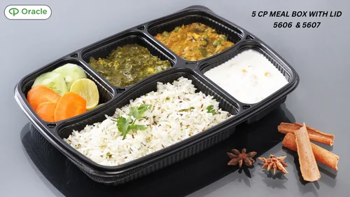

No categories match your search. View all products.
 View
ViewPages 1–5
Plastic Takeaway Containers
Round, rectangular, and premium meal boxes in food-grade plastic — hinged lids, separate lids, and dome options for delivery and catering.

ViewPages 6–10
Eco-Friendly Takeaway Containers
Bagasse, kraft, and compostable-format containers for brands moving toward lower-impact takeaway packaging.
- View
Pages 11–13
Meal Trays
Multi-compartment trays with matching lids for thalis, combo meals, and institutional catering — available in several cavity counts.
- View
Pages 14–17
Beverage Products
Paper cups, ripple glasses, and related beverage service disposables for cafés, QSR, and HORECA counters.
- View
Pages 18–19
Food Wrapping
Foil, paper, and film products for wrapping, lining, and protecting food during prep, storage, and delivery.
- View
Pages 20–22
Serving Bowls, Plates & Trays
Plates, bowls, and serving trays for dine-in, events, and takeaway — plastic and eco formats.
- View
Pages 23–25
Cutlery, Straws & Stirrers
Forks, spoons, knives, straws, and stirrers aligned with takeaway and dine-in service needs.
- View
Pages 26–27
Delivery Bags
Carry and delivery bags suited for food orders, including kraft and reinforced options.
- View
Pages 28–31
PET Products
Clear PET hinged and format containers for salads, desserts, and chilled display.
- View
Pages 32–35
Safety & Hygiene
Gloves, caps, and hygiene disposables to support safe food handling in kitchens and service areas.
- View
Pages 36
Other Products
Additional disposables and packaging accessories — refer to the full Zapac catalogue for codes and pack sizes.